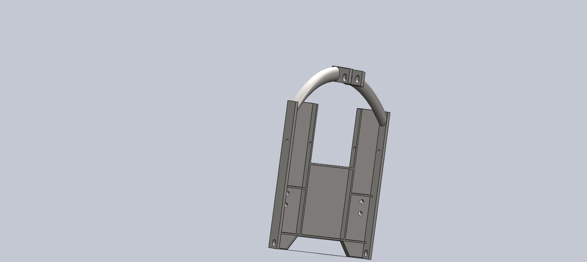
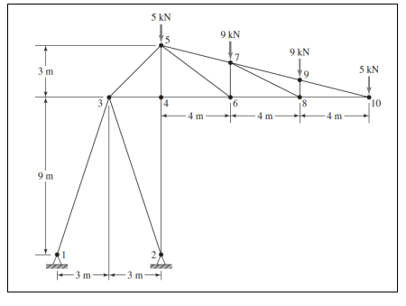
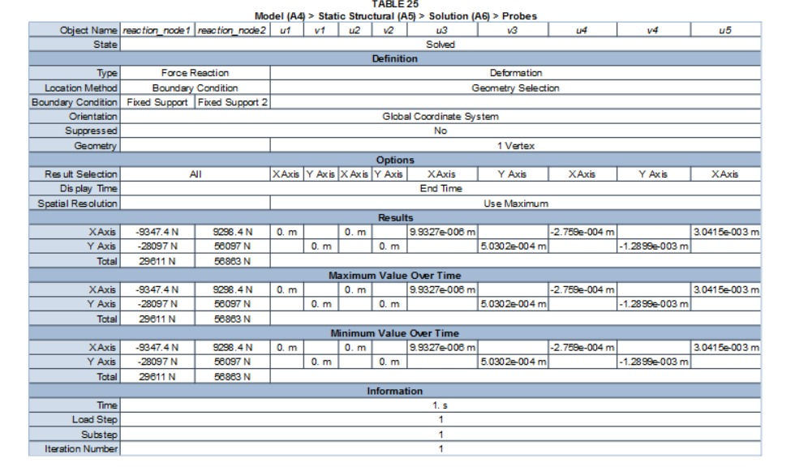
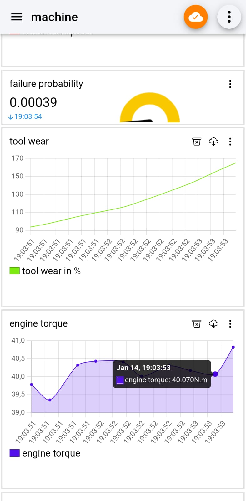
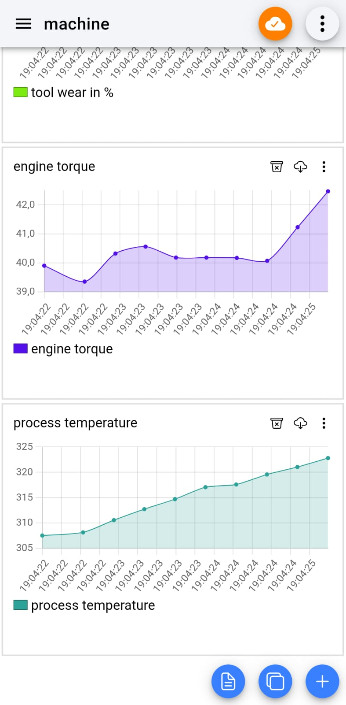
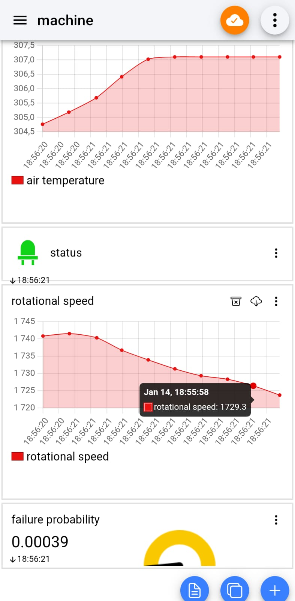

Design and Realisation of a Mobile Manipulator for Modern Agriculture
Master's thesis internship — I designed and modeled the robot in CAD and URDF, implemented autonomous navigation and manipulation using Nav2 and MoveIt 2, and built the decision-making architecture with BehaviorTree.CPP.
View on GitHub →
Snow Plow Design
BSc. internship in Mechanical Design and Manufacturing.

Bottle Feeding & Filling Cell
For this academic project, we simulated an industrial bottle feeding and filling process in ABB RobotStudio, coordinating two ABB robots and two conveyor belts to automate the full production sequence.
Truss Load Modeling
For this academic project, we used MATLAB to perform structural analysis of truss structures.


Heated Room Temperature Simulation
For this academic project, we modeled the temperature distribution in a heated room.
Failure Prediction in Production Line
For this significant academic project, we built a machine learning pipeline to predict equipment failures in a production line.
View on GitHub →

